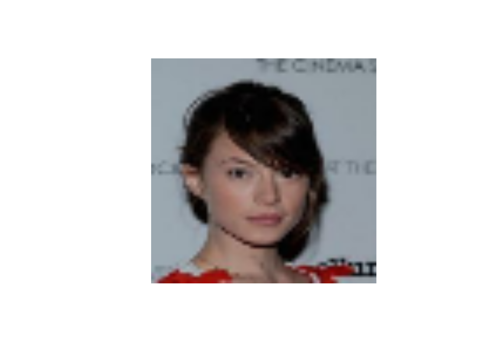
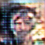
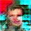

library(tensorflow)
library(keras)DCGAN to generate face images
generative
A simple DCGAN trained using
fit() by overriding train_step on CelebA images.
Setup
Prepare CelebA data
We’ll use face images from the CelebA dataset, resized to 64x64.
output <- "celeba_gan/data.zip"
if (!fs::dir_exists("celeba_gan")) {
fs::dir_create("celeba_gan")
url <- "https://drive.google.com/uc?id=1O7m1010EJjLE5QxLZiM9Fpjs7Oj6e684"
reticulate::import("gdown")$download(url, output, quiet=TRUE)
unzip(output, exdir = fs::path_dir(output))
}
dataset_path <- fs::path(fs::path_dir(output), "img_align_celeba")Create a dataset from our folder:
dataset <- image_dataset_from_directory(
dataset_path,
image_size = c(64, 64),
label_mode = NULL,
batch_size = 32
)Loaded Tensorflow version 2.9.1dataset <- dataset$apply(tf$data$experimental$ignore_errors(
log_warning=FALSE
))Let’s display a sample image:
dataset %>%
reticulate::as_iterator() %>%
reticulate::iter_next() %>%
as.array() %>%
{.[1,,,]} %>%
as.raster(max = 255) %>%
plot()
Create the discriminator
It maps a 64x64 image to a binary classification score.
discriminator <- keras_model_sequential(name = "discriminator", input_shape = shape(64, 64, 3)) %>%
layer_conv_2d(64, kernel_size = 4, strides = 2, padding = "same") %>%
layer_activation_leaky_relu(alpha = 0.2) %>%
layer_conv_2d(128, kernel_size = 4, strides = 2, padding = "same") %>%
layer_activation_leaky_relu(alpha = 0.2) %>%
layer_conv_2d(128, kernel_size = 4, strides = 2, padding = "same") %>%
layer_activation_leaky_relu(alpha = 0.2) %>%
layer_flatten() %>%
layer_dropout(0.2) %>%
layer_dense(1, activation = "sigmoid")
summary(discriminator)Model: "discriminator"
________________________________________________________________________________
Layer (type) Output Shape Param #
================================================================================
conv2d_2 (Conv2D) (None, 32, 32, 64) 3136
leaky_re_lu_2 (LeakyReLU) (None, 32, 32, 64) 0
conv2d_1 (Conv2D) (None, 16, 16, 128) 131200
leaky_re_lu_1 (LeakyReLU) (None, 16, 16, 128) 0
conv2d (Conv2D) (None, 8, 8, 128) 262272
leaky_re_lu (LeakyReLU) (None, 8, 8, 128) 0
flatten (Flatten) (None, 8192) 0
dropout (Dropout) (None, 8192) 0
dense (Dense) (None, 1) 8193
================================================================================
Total params: 404,801
Trainable params: 404,801
Non-trainable params: 0
________________________________________________________________________________Create the generator
It mirrors the discriminator, replacing conv_2d layers with conv_2d_transpose layers.
latent_dim <- 128L
generator <- keras_model_sequential(input_shape = shape(latent_dim), name = "generator") %>%
layer_dense(8 * 8 * 128) %>%
layer_reshape(shape(8, 8, 128)) %>%
layer_conv_2d_transpose(128, kernel_size = 4, strides = 2, padding = "same") %>%
layer_activation_leaky_relu(alpha = 0.2) %>%
layer_conv_2d_transpose(256, kernel_size = 4, strides = 2, padding = "same") %>%
layer_activation_leaky_relu(alpha = 0.2) %>%
layer_conv_2d_transpose(512, kernel_size = 4, strides = 2, padding = "same") %>%
layer_activation_leaky_relu(alpha = 0.2) %>%
layer_conv_2d(3, kernel_size = 5, padding = "same", activation = "sigmoid")
summary(generator)Model: "generator"
________________________________________________________________________________
Layer (type) Output Shape Param #
================================================================================
dense_1 (Dense) (None, 8192) 1056768
reshape (Reshape) (None, 8, 8, 128) 0
conv2d_transpose_2 (Conv2DTranspos (None, 16, 16, 128) 262272
e)
leaky_re_lu_5 (LeakyReLU) (None, 16, 16, 128) 0
conv2d_transpose_1 (Conv2DTranspos (None, 32, 32, 256) 524544
e)
leaky_re_lu_4 (LeakyReLU) (None, 32, 32, 256) 0
conv2d_transpose (Conv2DTranspose) (None, 64, 64, 512) 2097664
leaky_re_lu_3 (LeakyReLU) (None, 64, 64, 512) 0
conv2d_3 (Conv2D) (None, 64, 64, 3) 38403
================================================================================
Total params: 3,979,651
Trainable params: 3,979,651
Non-trainable params: 0
________________________________________________________________________________Override train_step
gan <- new_model_class(
"gan",
initialize = function(discriminator, generator, latent_dim) {
super()$`__init__`()
self$discriminator <- discriminator
self$generator <- generator
self$latent_dim <- latent_dim
self$rescale <- layer_rescaling(scale = 1/255)
},
compile = function(d_optimizer, g_optimizer, loss_fn) {
super()$compile()
self$d_optimizer <- d_optimizer
self$g_optimizer <- g_optimizer
self$loss_fn <- loss_fn
self$d_loss_metric <- tf$keras$metrics$Mean(name = "d_loss")
self$g_loss_metric <- keras$metrics$Mean(name = "g_loss")
},
metrics = mark_active(function() {
list(self$d_loss_metric, self$g_loss_metric)
}),
train_step = function(real_images) {
real_images <- self$rescale(real_images)
# Sample random points in the latent space
batch_size <- tf$shape(real_images)[1]
random_latent_vectors <- tf$random$normal(
shape = reticulate::tuple(batch_size, self$latent_dim)
)
# Decode them to fake images
generated_images <- self$generator(random_latent_vectors)
# Combine them with real images
combined_images <- tf$concat(list(generated_images, real_images), axis = 0L)
# Assemble labels discriminating real from fake images
labels <- tf$concat(
list(
tf$ones(reticulate::tuple(batch_size, 1L)),
tf$zeros(reticulate::tuple(batch_size, 1L))
),
axis = 0L
)
# Add random noise to the labels - important trick!
labels <- labels + 0.05 * tf$random$uniform(tf$shape(labels))
# Train the discriminator
with(tf$GradientTape() %as% tape, {
predictions <- self$discriminator(combined_images)
d_loss <- self$loss_fn(labels, predictions)
})
grads <- tape$gradient(d_loss, self$discriminator$trainable_weights)
self$d_optimizer$apply_gradients(
zip_lists(grads, self$discriminator$trainable_weights)
)
# Sample random points in the latent space
random_latent_vectors <- tf$random$normal(
shape = reticulate::tuple(batch_size, self$latent_dim)
)
# Assemble labels that say "all real images"
misleading_labels <- tf$zeros(reticulate::tuple(batch_size, 1L))
# Train the generator (note that we should *not* update the weights
# of the discriminator)!
with(tf$GradientTape() %as% tape, {
predictions <- self$discriminator(self$generator(random_latent_vectors))
g_loss <- self$loss_fn(misleading_labels, predictions)
})
grads <- tape$gradient(g_loss, self$generator$trainable_weights)
self$g_optimizer$apply_gradients(zip_lists(grads, self$generator$trainable_weights))
# Update metrics
self$d_loss_metric$update_state(d_loss)
self$g_loss_metric$update_state(g_loss)
list(
"d_loss" = self$d_loss_metric$result(),
"g_loss" = self$g_loss_metric$result()
)
}
)Create a callback that periodically saves generated images
gan_monitor <- new_callback_class(
"gan_monitor",
initialize = function(num_img = 3, latent_dim = 128L) {
self$num_img <- num_img
self$latent_dim <- as.integer(latent_dim)
if (!fs::dir_exists("dcgan")) fs::dir_create("dcgan")
},
on_epoch_end = function(epoch, logs) {
random_latent_vectors <- tf$random$normal(shape = shape(self$num_img, self$latent_dim))
generated_images <- self$model$generator(random_latent_vectors)
generated_images <- tf$clip_by_value(generated_images * 255, 0, 255)
generated_images <- as.array(generated_images)
for (i in seq_len(self$num_img)) {
image_array_save(
generated_images[i,,,],
sprintf("dcgan/generated_img_%03d_%d.png", epoch, i),
scale = FALSE
)
}
}
)Train the end-to-end model
epochs <- 15 # In practice, use ~100 epochs
gan <- gan(discriminator = discriminator, generator = generator, latent_dim = latent_dim)
gan %>% compile(
d_optimizer = optimizer_adam(learning_rate = 1e-4),
g_optimizer = optimizer_adam(learning_rate = 1e-4),
loss_fn = loss_binary_crossentropy(),
)
gan %>% fit(
dataset,
epochs = epochs,
callbacks = list(
gan_monitor(num_img = 10, latent_dim = latent_dim)
)
)Some of the last generated images around epoch 15 - each row is an epoch. (results keep improving after that):
grid <- expand.grid(1:10, 0:14)
knitr::include_graphics(sprintf("dcgan/generated_img_%03d_%d.png", grid[[2]], grid[[1]]))





